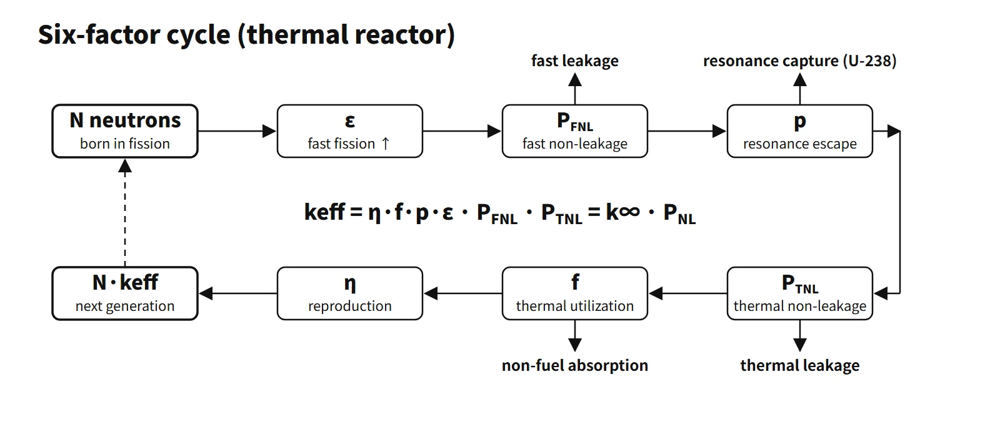

Reactor Physics & Kinetics · C-RX-003
Multiplication Factor and the Four- and Six-Factor Formulas (k∞, keff) — Reading One Neutron Generation as a Product of Six Factors
k∞ = η·f·p·ε describes the lattice, keff adds fast and thermal non-leakage, and keff = 1 is critical: follow 10,000 neutrons through one generation.
The multiplication factor is the number of neutrons produced by fission in one generation divided by the number in the previous generation; as a balance, it is production rate ÷ (absorption rate + leakage rate). In an infinite medium without leakage it is the infinite multiplication factor k∞ = η·f·p·ε (four-factor formula), and in a finite core it is the effective multiplication factor keff = k∞·PFNL·PTNL (six-factor formula).
In short: the ratio of production to loss (absorption + leakage) over one neutron generation; keff = 1 means critical, and in a thermal reactor it is expressed as the product of six factors.
Principle and mechanism
Following one generation of neutrons
In a thermal reactor, N fast neutrons born in fission grow and shrink in the order below. Each factor is defined as "number passing that stage ÷ number entering it". The order is only the order of counting in the balance; it does not mean the events must happen strictly in this sequence.
| Stage | Factor | Definition | What it counts |
|---|---|---|---|
| ① | ε fast fission factor | Fast neutrons from all fissions ÷ fast neutrons from thermal fissions | Extra neutrons from fast fission (mainly U-238, threshold about 1 MeV) |
| ② | PFNL fast non-leakage probability | Probability of not leaking out of the core while slowing down | Fast leakage |
| ③ | p resonance escape probability | Probability of passing the resonance region (about 6–200 eV) without absorption | U-238 resonance absorption loss |
| ④ | PTNL thermal non-leakage probability | Probability that a thermal neutron does not leak before absorption | Thermal leakage |
| ⑤ | f thermal utilization factor | Fraction of thermal absorptions that occur in fuel | Losses to moderator, structure and poisons |
| ⑥ | η reproduction factor | Fast neutrons produced per thermal neutron absorbed in fuel | η = ν·ΣfF/ΣaF (not every absorption in fuel is a fission) |
The figure below runs 10,000 neutrons once around the cycle with the teaching-example values of the DOE Fundamentals Handbook (ε 1.031, PFNL 0.889, p 0.803, PTNL 0.905, f 0.751, η 2.012). In this example the largest losses are resonance absorption (−1,806) and non-fuel absorption (−1,659), and the two leakage terms together remove about 1,840 neutrons. The next generation is 10,065, so keff ≈ 1.0065.
![Cycle diagram following 10,000 fast neutrons through one generation: times epsilon 1.031 gives 10,310 (fast fission +310), times P_FNL 0.889 gives 9,166 (fast leakage -1,144), times p 0.803 gives 7,360 (resonance capture -1,806), times P_TNL 0.905 gives 6,661 (thermal leakage -699), times f 0.751 gives 5,002 (non-fuel absorption -1,659), and times eta 2.012 gives 10,065 new neutrons, so keff = 10,065/10,000 = 1.0065; a card shows k-infinity = eta f p epsilon = 1.251 and keff = k-infinity P_FNL P_TNL = 1.0065 with the subcritical, critical and supercritical criterion](../../assets/images/concepts/c-rx-003-multiplication-factor/fig1-neutron-life-cycle.webp)
The four factors and the two leakage factors depend on different things
- k∞ = η·f·p·ε is a property of the lattice (materials). It is set by enrichment, moderator-to-fuel ratio, fuel rod diameter, temperature, and boron and other poisons. In the example above, k∞ = 1.251.
- PFNL·PTNL are set by core size and shape. In one-group diffusion theory PTNL = 1/(1+L²B²); for fast neutrons Fermi age theory gives PFNL ≈ e−τB², approximated as 1/(1+τB²) for small τB² (L² thermal diffusion area, τ Fermi age, B² geometric buckling). In the example the product of the two is 0.805.
Substituting ∇²φ = −B²φ into the thermal neutron diffusion equation −D∇²φ + Σaφ = (1/k)·νΣfφ gives keff = k∞/(1+L²B²) directly. Extending to two groups gives keff = ν₁Σf1/(D₁B²+Σr1) + ν₂Σf2·Σs12/[(D₁B²+Σr1)(D₂B²+Σa2)] (assuming Bg² = B²), and collapsing to one-group form gives keff ≈ k∞/(1+M²B²) with M² = L² + τ. The criticality condition keff = 1 is the same statement as the material buckling Bm² = (k∞−1)/M² being equal to the geometric buckling Bg².
Worked example: η calculation
For 2.5 wt% enrichment, σf²³⁵ = 580 b, σa²³⁵ = 680 b, σa²³⁸ = 2.8 b and ν = 2.43, the atom ratio is N₂₅/N₂₈ = (0.025/235)/(0.975/238) = 0.0260.
η = ν·σf25·N₂₅ / (σa25·N₂₅ + σa28·N₂₈) = 2.43×580×0.0260 / (680×0.0260 + 2.8) ≈ 1.79
Pure U-235 gives 2.43×580/680 ≈ 2.07, and natural uranium about 1.33. Because U-238 absorption appears in the denominator, η varies strongly with enrichment.
keff ranges and reactor states
| keff | ρ | State | Neutron population |
|---|---|---|---|
| < 1 | < 0 | Subcritical | Decreases each generation (converges to a constant level if there is an external source) |
| = 1 | 0 | Critical | Constant |
| > 1 | 0 < ρ < β | Delayed supercritical | Delayed neutrons govern the period; controllable |
| > 1 | ρ ≥ β | Prompt critical / prompt supercritical | Increases on prompt neutrons alone; excluded by design |
The example's ρ ≈ 0.0064 is a large value close to β = 0.0065. It is only an example of a generation balance, not an operating state; in real operation boron and control rods hold keff = 1.
What it means in a plant — effect on each factor
Even for the same "decrease in k∞", it matters which factor moves.
| Change | η | f | p | ε | Leakage |
|---|---|---|---|---|---|
| Control rod insertion | Unchanged | ↓ main effect (absorber takes thermal neutrons) | ↓ slightly (Ag-In-Cd, Hf resonance absorption) | Unchanged | Distorts the flux distribution |
| Fuel temperature ↑ | Almost unchanged | Almost unchanged | ↓ Doppler broadening (prompt negative feedback) | Unchanged | — |
| Moderator temperature ↑ (density ↓) | Small change from spectrum hardening | ↑ (less absorption in moderator and dissolved boron) | ↓ (insufficient moderation) | Slightly ↑ | ↑ (PFNL·PTNL ↓) |
| Burnup | ↓ (U-235 depletion, partly offset by Pu-239 build-up) | ↓ (less fissile material, fission-product poisons build up) | Slightly ↓ (Pu-240 resonance at 1.06 eV) | Almost unchanged | Almost unchanged |
- Temperature: a PWR is designed on the under-moderated side, so when the moderator temperature rises the decrease in p outweighs the increase in f and reactivity falls. At high beginning-of-cycle boron concentrations, however, the increase in f is larger, and the moderator temperature coefficient can become less negative or even positive.
- Burnup: since k∞ falls throughout the cycle, the beginning-of-cycle excess reactivity is offset with boron and burnable poison rods and released gradually. The cycle ends when boron approaches 0 ppm.
- Moderator-to-fuel ratio and lattice: more moderator lowers f and raises p, so keff has a maximum. At the same volume ratio, thicker fuel rods raise p through resonance self-shielding but lower f because the thermal flux inside the fuel is depressed.
Regulatory and design criteria
The criteria below are examples from the United States (US NRC) and the IAEA.
- 10 CFR 50.68 (introduced 1998): requires keff ≤ 0.95 for new fuel storage racks flooded with unborated water and ≤ 0.98 under optimum moderation, and keff ≤ 0.95 for spent fuel storage racks. If credit is taken for soluble boron, keff must also remain below 1.0 when flooded with unborated water. All at a 95 % probability and 95 % confidence level.
- GDC 62: requires criticality in fuel storage and handling to be prevented, preferably by geometrically safe configurations. GDC 26 and 27 deal with reactivity control systems and shutdown margin.
- NUREG-0800 SRP 4.3: reviews the calculation methods and uncertainties of multiplication factors and reactivity coefficients. SRP 9.1.1 and 9.1.2 review storage criticality analyses. Boron concentration during refuelling is managed through the standard technical specifications and the Core Operating Limits Report (COLR).
- IAEA: SSR-2/1 (Rev. 1, 2016) and SSG-52 (2019) set core design and reactivity control requirements.
Easily confused pairs
| k∞ | keff | |
|---|---|---|
| Definition | Production ÷ absorption | Production ÷ (absorption + leakage) |
| Formula | η·f·p·ε (four factors) | k∞·PFNL·PTNL (six factors) |
| Determined by | Lattice composition, temperature, poisons | + core size, shape, reflector |
| Criticality judgement | Cannot decide (k∞ > 1 is needed for criticality to be possible) | Critical when keff = 1 |
| ν | η | |
|---|---|---|
| Basis | Per fission | Per absorption in fuel |
| U-235 thermal | About 2.43 | About 2.07 |
| Relation | — | η = ν·σf/σa < ν |
Key points at a glance
- Definition: keff = neutrons produced in one generation ÷ neutrons (absorbed + leaked) in the previous generation.
- Four factors (k∞): k∞ = η·f·p·ε; infinite medium without leakage; a lattice property.
- ε: extra neutrons from U-238 fast fission; about 1.03 in heterogeneous cores.
- p: probability of escaping absorption in the U-238 resonance region (about 6–200 eV).
- f: fraction of thermal absorptions in fuel; reduced by moderator and poison absorption.
- η: neutrons produced per absorption in fuel = ν·Σf/Σa; U-235 about 2.07, natural U about 1.33.
- Two leakage factors: PFNL ≈ e−τB², PTNL = 1/(1+L²B²) → keff = k∞·PFNL·PTNL.
- States: keff < 1 subcritical, = 1 critical, > 1 supercritical (0 < ρ < β delayed supercritical, ρ ≥ β prompt critical).
- Design and operation: k∞ falls with burnup → excess reactivity managed with boron and burnable poisons; storage keff ≤ 0.95.
- Notation: symbols and ordering of the six factors differ between textbooks (Lf/Lt versus PFNL/PTNL); define them, and never confuse k∞ with keff.
